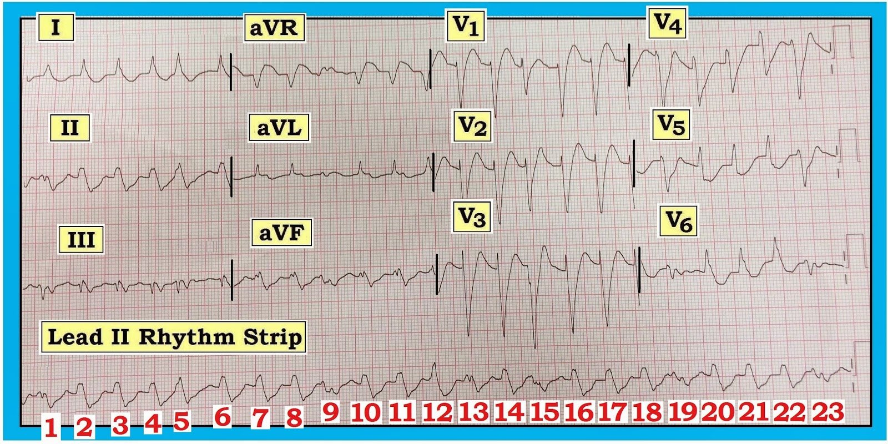
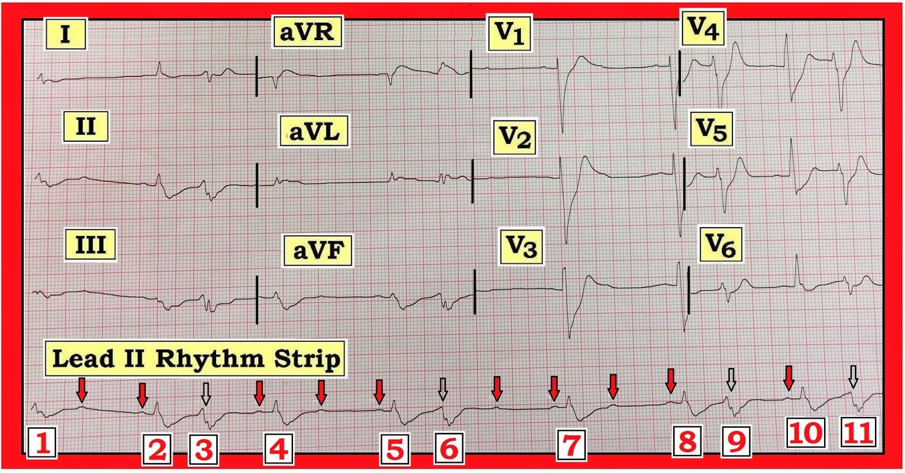
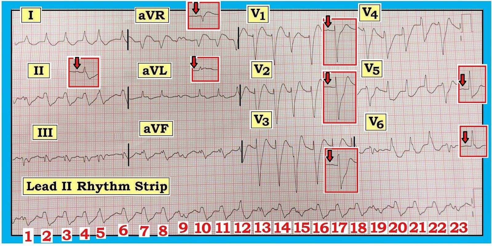
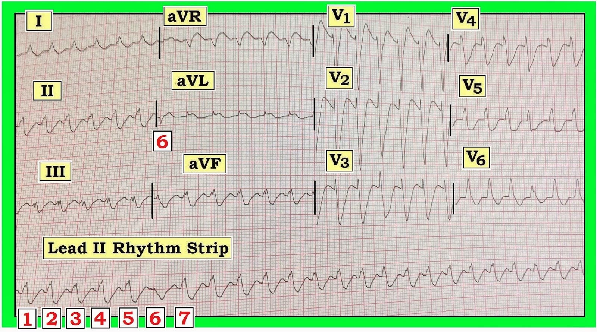

Ôn tập đọc điện tâm đồ – Số 86 (WCT đều – VT – SVT – Sóng T de Winter – Dẫn truyền lệch hướng – Nhát bắt được)
Hãy đọc điện tâm đồ trong Hình 1 — ghi từ một nam giới 53 tuổi đến khoa cấp cứu (ED – Emergency Department) vì đau ngực mới khởi phát kéo dài 1 giờ. Bệnh nhân không ổn định về huyết động, huyết áp tâm thu ~60 mm Hg vào thời điểm ghi điện tâm đồ này.
- Nhịp trong Hình 1 nhiều khả năng là gì?
- Bạn chắc chắn đến mức nào về câu trả lời của mình?
- Chẩn đoán phân biệt của bạn là gì?
- Về lâm sàng — Bạn sẽ làm gì?


------------------------------------------
Diễn giải Hình 1: Có một nhịp nhanh QRS rộng (WCT – Wide-Complex Tachycardia) khá đều (nhưng không hoàn toàn đều), tần số ~150 lần/phút. Không thấy sóng P bình thường. Bệnh nhân không ổn định về huyết động. Vì vậy — cần coi đây là VT (nhịp nhanh thất – Ventricular Tachycardia) cho đến khi chứng minh được điều ngược lại. Có chỉ định sốc điện chuyển nhịp ngay lập tức. Bạn có đồng ý không?
Điện tâm đồ và bối cảnh lâm sàng này đặt ra một số câu hỏi.
- Chúng ta có thể chắc chắn đến mức nào rằng nhịp này là VT?
- Việc chúng ta không chắc chắn về chẩn đoán có quan trọng không — khi bệnh nhân đang không ổn định về huyết động?
- Những đặc điểm cụ thể nào trên điện tâm đồ này và trên dải nhịp DII dài ủng hộ chẩn đoán VT?
- Những đặc điểm nào gợi ý đây có thể không phải là VT?
- Làm sao chúng ta biết được?
------------------------------------------
LƯU Ý: Ca này được gửi đến tôi để xin ý kiến. Tôi không trực tiếp khám bệnh nhân. Trước khi tôi trình bày từng bước suy nghĩ của mình — Bạn có thể cân nhắc câu trả lời của mình cho các câu hỏi trên.
------------------------------------------
CÂU TRẢ LỜI CỦA TÔI: Đánh giá ban đầu của tôi về điện tâm đồ trong Hình 1 đúng như đã nêu ở trên — nhịp là một WCT (Wide-Complex Tachycardia) khá đều, tần số ~150 lần/phút, không có sóng P bình thường — vì vậy là VT cho đến khi chứng minh được điều ngược lại. Vì bệnh nhân rõ ràng không ổn định về huyết động — ưu tiên số 1 là sốc điện chuyển nhịp cho bệnh nhân bất kể đó là nhịp gì. Việc này đã được thực hiện. Dù vậy — tôi không chắc chắn về chẩn đoán.
- Mặc dù phức bộ QRS trong cơn nhịp nhanh ở Hình 1 quả thật trông rộng — hình dạng QRS không thật sự gợi ý nguồn gốc thất. Thay vào đó — nó gợi ý nhiều hơn đến hình ảnh LBBB (blốc nhánh trái – Left Bundle Branch Block), vì có sóng R đơn pha dương ở cả chuyển đạo I và V6; và QRS chủ yếu âm ở chuyển đạo V1.
- Vấn đề là hình dạng QRS kiểu LBBB trong một nhịp WCT (Wide-Complex Tachycardia) thường không có giá trị chẩn đoán — và có thể do hoặc VT hoặc SVT (nhịp nhanh trên thất – SupraVentricular Tachycardia), trong đó QRS rộng là do blốc nhánh có từ trước, dẫn truyền lệch hướng, hoặc một nguyên nhân nào khác gây QRS rộng sẵn ở nền.
- Một số đặc điểm hình dạng NẾU thấy được sẽ gợi ý đặc biệt mạnh rằng một nhịp WCT là VT. Bao gồm: i) Trục lệch cực độ (tức là QRS âm hoàn toàn ở chuyển đạo I hoặc ở chuyển đạo aVF); ii) Sóng R dương hoàn toàn ở chuyển đạo aVR (hoàn toàn không có sóng q hay Q nào ở aVR); iii) QRS âm hoàn toàn (hoặc gần như hoàn toàn âm) ở chuyển đạo V6; và/hoặc iv) QRS đồng hướng toàn bộ ở các chuyển đạo trước tim (tức là QRS hoặc đều dương, hoặc đều âm ở cả 6 chuyển đạo trước tim). Việc thấy bất kỳ đặc điểm nào trong số này hữu ích bao nhiêu trong việc nghiêng về VT — thì việc không thấy chúng lại chẳng giúp gì cho chẩn đoán bấy nhiêu. Không có đặc điểm nào trong số này xuất hiện ở Hình 1.
- Mặc dù bản thân hình ảnh LBBB không giúp khẳng định hay loại trừ VT — nguyên nhân trên thất sẽ nhiều khả năng hơn NẾU sườn xuống của sóng S ở các chuyển đạo V1,V2,V3 rất dốc. Ngược lại — sườn xuống của sóng S ở các chuyển đạo trước bị trát đậm hoặc hơi chậm lại thì gợi ý VT nhiều hơn (do khả năng cao có sự chậm trễ khử cực ở phần đầu khi WCT xuất phát từ thất). Sườn xuống của sóng S ở các chuyển đạo V1,V2,V3 trong Hình 1 quả thật rất dốc. Nhận ra điều này khiến tôi nghi ngờ liệu nhịp này có thật sự là VT hay không ...
- Nhịp trong Hình 1 không đều hoàn toàn. Điều này thấy rõ trên dải nhịp DII dài. Dù vậy — VT không phải lúc nào cũng đều tuyệt đối. Với các khoảng R-R trông có vẻ đều giữa các nhát #2-3; 3-4; 6-7; 7-8; 10-11; 11-12; 16-17; 17-18; 20-21; 21-22 — tôi không cho rằng nhịp này đủ không đều để chẩn đoán AFib (rung nhĩ – Atrial Fibrillation) — dù rung nhĩ có nằm trong chẩn đoán phân biệt của tôi vì không thấy sóng P bình thường.
- Hình dạng QRS thay đổi ở các nhát #9, 13, 15, 19 và 23 trên dải nhịp DII dài của Hình 1. Đây có phải là các nhát bắt được hoặc nhát hỗn hợp, qua đó củng cố thêm khả năng nhịp này là VT? Tôi đã nghĩ có thể là như vậy.
Sau khi dành những giây quý giá cân nhắc những lý lẽ ủng hộ và phản bác nêu ở các gạch đầu dòng trên cho câu hỏi “VT hay không phải VT” — tôi đi đến những suy nghĩ sau: i) Tôi không chắc chắn về chẩn đoán nhịp; ii) Khi chưa chắc chắn — cần coi là VT cho đến khi chứng minh được điều ngược lại; và iii) Khi huyết động không ổn định và nhiều khả năng sự bất ổn này là do cơn nhịp nhanh gây ra — có chỉ định sốc điện chuyển nhịp ngay lập tức bất kể cuối cùng nhịp đó là gì.
------------------------------------------
Nhịp SAU Chuyển nhịp: Như đã nêu ở trên — bệnh nhân có nhịp trong Hình 1 không ổn định về huyết động. Bệnh nhân được điều trị như VT — và được sốc điện hai lần. Kết quả là nhịp trong Hình 2.
- Nhịp sau chuyển nhịp trong Hình 2 là gì?
- Bạn có đồng ý với các mũi tên chúng tôi đã đánh dấu trên dải nhịp DII dài không? — trong đó mũi tên đỏ chỉ các sóng P ta thấy được, và mũi tên rỗng chỉ các sóng P mà ta cho là có mặt nhưng bị che lấp trong phức bộ QRS của các nhát #3,6,9 và 11?
- Câu hỏi MẤU CHỐT: Điện tâm đồ trong Hình 2 có làm thay đổi nhận định của bạn về nhịp trong Hình 1 không?
- Về lâm sàng — Bạn nghĩ điều gì đã xảy ra trong ca này?


------------------------------------------
CÂU TRẢ LỜI CỦA TÔI: Có lẽ — các mũi tên trên dải nhịp DII dài ở Hình 2 đúng là phản ánh việc chuyển về một nhịp xoang khá đều (với các mũi tên rỗng biểu thị sóng P bị che lấp trong phức bộ QRS của các nhát #3,6,9 và 11). Một số sóng P này có dẫn truyền — thể hiện qua khoảng PR hằng định đứng trước các nhát #2,4,5,7,8 và 10. Nhưng nhiều sóng P khác lẽ ra phải dẫn truyền lại không được dẫn truyền. Vì vậy chúng tôi diễn giải nhịp này là blốc AV độ 2 mức độ cao.
- Nhận ra rằng các sóng P của các nhát #2,4,5,7,8 và 10 có dẫn truyền là MẤU CHỐT để xác định hồi cứu nhịp trong Hình 1. Lý do là giờ đây chúng ta đã biết QRS trông như thế nào trong một nhịp trên thất. Ví dụ — Hãy nhìn ngay phía trên nhát #7 trên dải nhịp DII ở Hình 2. Lưu ý rằng lý do chính khiến phức bộ QRS ở các chuyển đạo V1,V2,V3 ghi đồng thời trông rộng — là do đoạn ST chênh xuống rất rõ chuyển tiếp thành sóng T nhọn. Điều tương tự cũng đúng khi ta nhìn ngay phía trên nhát dẫn truyền từ xoang #10 — ở đó ta thấy ST chênh xuống rất rõ ở các chuyển đạo V4,V5.
- Lưu ý rằng hình dạng QRS trên dải nhịp DII dài ở Hình 2 khác ở các nhát #1,3,6,9 và 11. Việc các nhát này thật sự trông khác với các nhát dẫn truyền #2,4,5,7,8 và 10 — có lẽ thấy rõ nhất khi nhìn vào các chuyển đạo V5 và V6 — nơi hiển nhiên có 2 phức bộ QRS hình dạng khác nhau. Các nhát #1,3,6,9 và 11 là PVC.
- Biết rằng các nhát #2,4,5,7,8 và 10 là nhát dẫn truyền — cho phép ta đánh giá thay đổi ST-T của các nhát dẫn truyền này ở những chuyển đạo khác trên điện tâm đồ sau chuyển nhịp. Làm như vậy sẽ thấy một hình ảnh rất gợi ý sóng T de Winter! Tức là — Ta thấy ST chênh lên kín đáo-nhưng-có-thật ở các chuyển đạo aVR và aVL — và điểm J chênh xuống đáng kể ở các chuyển đạo từ V1 đến V5, dẫn vào sóng T nhọn (ít nhất ở các chuyển đạo V2,V3). Ở một bệnh nhân đau ngực dữ dội mới khởi phát — hình ảnh điện tâm đồ này rất gợi ý tắc cấp đoạn gần LAD (động mạch liên thất trước – Left Anterior Descending artery).
Để kiểm chứng giả thuyết trên — tôi dựng Hình 3 bằng cách chồng lên điện tâm đồ của Hình 1 (viền XANH) một loạt ô chèn cho thấy các phức bộ dẫn truyền từ xoang ở các chuyển đạo II; aVR,aVL; V1,V2,V3; và V5,V6 trong Hình 2 (viền ĐỎ). Ngoài việc có lẽ đoạn ST-T hơi rộng thêm đôi chút (do nhịp nhanh) — hình dạng QRST trong cơn “nhịp nhanh QRS rộng” ban đầu ở Hình 1 rất giống hình dạng QRST của các phức bộ dẫn truyền từ xoang ở Hình 2.
- Nhìn lại — tôi nghĩ nhịp trong Hình 1 từ đầu đến cuối vẫn là nhịp trên thất. Ảo giác “QRS rộng” có lẽ được tạo ra bởi bất thường ST-T rất rõ của hình ảnh sóng T de Winter. Một phần ST chênh xuống có thể đã được cộng thêm vào ở Hình 1 do nhịp nhanh trên thất (vốn là một nguyên nhân đã biết gây ST chênh xuống).
- Thay vì nhát hỗn hợp hay nhát bắt được — tôi ngờ rằng nhịp nền ở Hình 1 có thể là nhịp nhanh xoang (với sóng P xoang bị che lấp trong sóng T đứng trước) — và các nhát #9, 13, 15, 19 và 23 là PVC. Tiền đề này được Hình 2 ủng hộ, vì hình này quả thật cho thấy các PVC có hình dạng tương tự các nhát #9,13,15,19,23 ở Hình 1.


------------------------------------------
Tổng Hợp Lại Tất cả: Tôi ngờ rằng nguyên nhân gây đau ngực mới khởi phát ở bệnh nhân này là tắc cấp đoạn gần LAD (hình ảnh sóng T de Winter). Bệnh nhân có lẽ đang ở nhịp nhanh xoang trong Hình 1 kèm sốc tim do STEMI cấp đang tiến triển. Nhìn qua “kính hồi cứu” (retrospectoscope) — người ta có thể đặt câu hỏi về lần sốc điện chuyển nhịp ban đầu. Dù vậy — với hình ảnh điện tâm đồ ban đầu và tình trạng huyết động không ổn định mà xét mọi mặt đều có vẻ là hậu quả của cơn nhịp nhanh — lần sốc điện ban đầu là có chỉ định. Ca này bất thường và rất bổ ích vì QRS rộng dường như không do blốc nhánh có từ trước hay dẫn truyền lệch hướng — mà là do thay đổi ST-T rất rõ của hình ảnh sóng T de Winter.
------------------------------------------
Kết Cục của ca: Sau điện tâm đồ ở Hình 2 — bệnh nhân tiến triển nhịp chậm tăng dần, rồi ngừng tim với hoạt động điện vô mạch (PEA). Bệnh nhân được hồi sức bằng Epinephrine và CPR tích cực. Mạch tạm thời có lại, kèm điện tâm đồ trong Hình 4. Bệnh nhân vẫn tụt huyết áp dù đã dùng thuốc vận mạch. Bệnh nhân ngừng tim lần nữa — và không thể hồi sức được.
- Dựa trên các bản ghi trước đó — Bạn sẽ diễn giải điện tâm đồ trong Hình 4 như thế nào? Bệnh nhân không đáp ứng và tụt huyết áp vào thời điểm ghi bản ghi này.
- Nhát #6 là gì?


------------------------------------------
Diễn giải Hình 4: Nếu chỉ được xem điện tâm đồ ở Hình 4 và được cho biết điện tâm đồ này ghi trong lúc cấp cứu ngừng tim ở một bệnh nhân vẫn tụt huyết áp — thì VT rõ ràng sẽ là chẩn đoán nhịp được giả định. Tuy nhiên — Chúng tôi cho rằng đã có lập luận khá thuyết phục rằng nhịp ban đầu ở Hình 1 là nhịp trên thất và không phải VT. Với sự giống nhau rõ rệt về hình dạng QRST giữa các nhát rộng ở Hình 1 và Hình 4 — Chúng tôi rất nghi ngờ nhịp ở Hình 4 một lần nữa là nhịp trên thất (có lẽ là nhịp nhanh xoang?), với QRS rộng vẫn là do hình ảnh de Winter.
- Hình dạng của nhát #6 ở Hình 4 phù hợp với hình dạng của các nhát khác được cho là PVC ở Hình 1 và 2.
------------------------------------------
Lời cảm ơn: Tôi xin cảm ơn “CZ” — người đã gửi cho tôi các bản ghi này và cho phép tôi dùng ca này để giảng dạy.
------------------------------------------
- Để biết thêm thông tin — XEM:
- Xem Mục 08.0, 09.0 (trích từ ACLS-2013-ePub) — bản pdf ôn tập về phân biệt SVT với VT –
- Để ôn tập về sóng T de Winter — Xem ECG Blog #53 của chúng tôi.
------------------------------------------